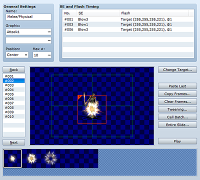
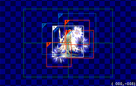

Animation data is for displaying attacks on enemy characters on the battle screen and for visual representations that can be played back on the map screen and other places. They are created by placing image patterns (cells) in frames.

The name of the animation. This setting is only used by the editor and has no impact on game play.
The graphic files (maximum of two) used in creating the animation. Click the ... button in the boxes to display the Animation Graphics dialog box in which you can specify the file you want to use. When specifying a file, you can use the Hue slider to adjust the graphic's hue. When you specify a file, a pattern image will be displayed in the Pattern Palette.
Specify the animation's display position. Head, Center, and Feet specify the top, middle, and bottom of the target character, respectively. Specifying Screen displays the animation over the entire screen. Note that when the scope of a skill or item that uses this animation is all targets, animations set to Head, Center, or Feet are displayed for each character.
Sets the number of frames (1 to 200) for the entire animation. Click the ... button and specify a value in the dialog box that appears. The number of frames specified here will be displayed in the frame list. Reducing the number of frames will delete frames beyond the specified number.
Set the sound effects and screen flash colors used in the specified frame during the animation. In the SE and Flash Timing dialog box that appears when you double-click a row in the list (or a blank row to create a new setting), specify the items shown below.
Right-clicking a list item displays a shortcut menu containing the Edit, Cut, Copy and Delete commands.
Specify the frame number subject to processing.
Specify the sound effect to play back.
Specifies the type of flash processing. Specify Target to make a character flash or Screen to make the entire screen flash. Specify the flash color using the Red, Green, and Blue controls and the flash transparency using the Strength control (1 to 255 for all four controls). For Duration, specify the playback time in frames (1 to 200). Hide Target temporarily hides the target character when you want to display a full-body character animation or other such situations.
A list of frames within the animation. The frame number selected by clicking will be edited and is displayed in frame view on the right. Use the Back and Next buttons at the top and bottom of the list to move to the frame you want to edit. And in the shortcut menu that appears when you right-click a frame number, you can select the commands Copy, Paste, Clear, Insert, and Delete per frame.
Shows a preview of the frame. You can set the display content by placing a pattern palette image here as a cell. The green square represents the game window's display area.
See "Frame View Controls" below for more information on editing frames.
Changes the graphic for the enemy character currently displayed in frame view. This setting is only used by the editor and has no impact on game play.
Pastes the cell placed on the previous frame onto the frame currently being edited.
Copies the specified range of frames all at once. Specify the starting and ending number of the target frames and to the right of to, specify the frame number of the copy destination.
Clears the specified range of frames all at once. Specify the starting and ending number of the target frames.
Automatically tweens the frames between two frames for smoother animation. In Frames and Cells, specify the range of frames and cells subject to tweening, in Tweening Items, select the items to tween, and then click the OK button. For example, if you were to tween frames 1 to 10 targeting the position with frame 1 at the left end and frame 10 at the right end, cells that shift position from left to right would be automatically set in frames 2 through 9.
Changes the cells in the specified range of frames to the same settings. In Frames and Cells, specify the range of frames and cells to set, select the items to set, and then specify values for each setting.
Moves the cells in the specified range of frames all at once. In Frames, specify the starting and ending number of the target frames, and in X and Y of Movement Amount, specify the movement distance in each direction in pixels. To move to the left or upwards, specify a negative value in X and Y.
Clicking this button plays the animation you are creating.
Displays the pattern image in the file specified by Graphic. Clicking a pattern selects it to be placed in the frame. Patterns are numbered starting from 1 on the upper left of the palette, and numbers (pattern numbers) are assigned in order from left to right.

Use the Pattern Palette to select the image to place in the frame and then click on an empty part of the frame editing area. A cell with the image will be placed. You can place up to sixteen cells in one frame.
Borders and numbers are displayed for each cell. A white border means the cell is selected, red means it has been placed, and blue means it was placed in the previous frame. The numbers indicate cell priority, with the higher number being closer to the front.
Clicking a cell turns its border white, indicating that it has been selected to be edited. Lower-number cells that have other cells over them can be selected by holding down the Ctrl key while clicking.
Move cells by dragging them. Normally, you can drag them in eight-pixel increments, but hold down the Alt key if you want to drag them in two-pixel increments. The position of the currently selected cell is displayed as coordinates at the bottom right of the frame editing area. The x and y coordinates for the center of the screen are (0, 0), and the x axis ranges between -272 to 272, while the y axis ranges between -208 and 208.
Right-clicking a cell displays the shortcut menu in which you can execute the commands described below. The Cell Settings dialog box can be opened by double-clicking a cell.
Opens the Cell Settings dialog box. (details below)
Undoes the previous operation and reverts to the previous state. You can undo up to eight previous operations.
Reverses the result of the Undo command.
Copies the selected cell to the clipboard and deletes the original selection.
Copies the selected cell to the clipboard.
Places the cell that is currently in the clipboard.
Deletes the currently selected cell.
Changes the display priority (forward/back) of the cell.
The number of the pattern. Changing a number changes the pattern to the corresponding number.
The cell's display position. Specify -272 to 272 for the x axis and -208 to 208 for the y axis.
The cell's zoom rate. Specify a zoom rate that is between 20% and 800% of the original image size.
The cell's angle of rotation (1 to 360 degrees). The cell will be displayed rotated clockwise by the angle you specify. Note that over use of this command will cause game processing to slow down.
Setting Yes will flip the cell pattern horizontally.
The cell's opacity (0 to 255). The lower the value, the greater the transparency. Setting "0" renders the cell invisible.
Specifies how to blend colors when one cell overlaps another. Normal is the standard method, Additive results in a lighter color, and Subtractive results in a darker color.